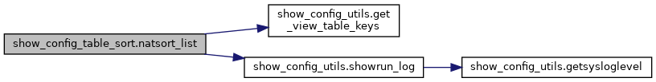

My Project
함수
show_config_table_sort 네임스페이스 참조
함수
def
natsort_list
(sonic_table_lst, table_path)
함수 문서화
◆
natsort_list()
def show_config_table_sort.natsort_list
(
sonic_table_lst
,
table_path
)
show_config_table_sort.py
파일의
24
번째 라인에서 정의되었습니다.
24
def
natsort_list
(sonic_table_lst , table_path):
25
26
27
table_keys =
get_view_table_keys
(table_path)
28
29
if
table_keys:
30
try
:
31
sonic_table_lst = natsorted(sonic_table_lst,key=
lambda
t: t[table_keys[0][0]])
32
except
:
33
showrun_log
(logging.ERROR,
"Table {} sorting failure "
, table_path)
34
pass
35
36
return
sonic_table_lst
이 함수 내부에서 호출하는 함수들에 대한 그래프입니다.:

show_config_utils.showrun_log
def showrun_log(log_lvl, msg, *args)
Definition:
show_config_utils.py:35
show_config_table_sort.natsort_list
def natsort_list(sonic_table_lst, table_path)
Definition:
show_config_table_sort.py:24
show_config_utils.get_view_table_keys
def get_view_table_keys(table_path)
Definition:
show_config_utils.py:55
다음에 의해 생성됨 :
1.8.17
 1.8.17
1.8.17